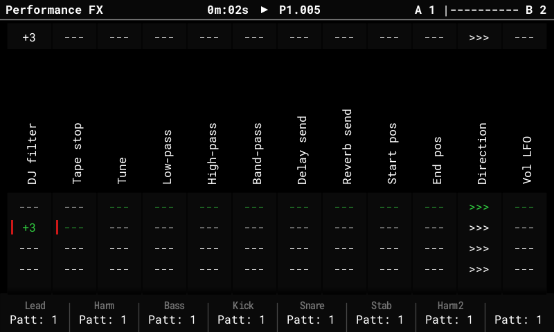
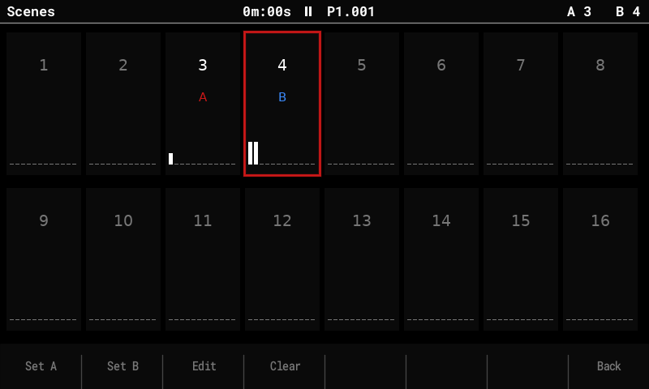

Performance mode¶
The Performance screen plays effects live from the pads: 12 columns, each an effect type, with 3 stored values per column on the pad rows. The fork adds scenes with a crossfader, a bank of 16 scenes, and master FX (DJ filter, tape stop).

Basics (as in stock)¶
- Press Performance. Hold a pad to play that column's value on its row; release to go back. The top row shows what's playing.
- Rec (edit mode): Up / Down change a column's effect type, the encoder changes the value of the selected row. In the fork, a tapped row can be edited with the encoder without holding the pad.
- The F keys turn the effects on or off per track (lit = on). Shift + F key mutes the track. Left / Right (outside edit mode) switch the F keys between tracks 1–8 and 9–16.
- Effect types include Volume, Panning, Tune, Low-pass / High-pass / Band-pass, Delay and Reverb send, Start / End pos, Direction, the LFOs, Repeater, Play mode, Length, Bit depth and Overdrive, plus the fork's DJ filter and Tape stop.
Scenes and the crossfader¶
A scene stores a row for every column. The crossfader's two ends, A and B, each play a scene; the encoder (outside edit mode) or MIDI CC 63 fades between them.
- Continuous values (volume, filters, sends …) fade smoothly. Filters cross over at the middle (a low-pass on A and a high-pass on B don't fight). Stepped effects (Repeater, Direction, Tape stop …) switch at the middle.
- The title bar shows the pair (
A 1 |------| B 2) and where the fader is. Rows of the scene on A are marked red, on B blue; the pad LEDs follow the fader.
Store and clear while playing¶
| Keys | Does |
|---|---|
| Shift + Left / Right | Store the current pad rows into the scene on A / B. |
| Delete + Left / Right | Clear the scene on A / B. |
| Hold pads + Shift / Delete + Left / Right | Store / clear only the held columns. |
The scene bank¶
Press Performance again on the Performance screen to open the scene bank page: 16 scenes, with the ones on A and B marked.

| Key | Does |
|---|---|
| Arrows, encoder or pads | Select a scene. |
| F1 Set A / F2 Set B | Put the selected scene on the fader's A / B end. |
| F3 Edit | Open the scene on the Performance screen ("Editing scene N"): the pads set its rows, and you hear them as you go. Going back saves it. |
| F4 Clear | Clear the selected scene. |
| F8 Back or Performance | Back to playing. |
Scenes can also be put on the fader by a song: see Song mode.
Master FX¶
Two effect types act on the whole mix (after all tracks and synths, before the limiter), instead of on each track:
- DJ filter: one value from −100 to +100. Below 0 a low-pass sweeping down, above 0 a high-pass sweeping up, 0 off. It's smoothed, so pads and the fader don't click, and it uses no CPU while off.
- Tape stop: momentary. Hold its pad and the mix slows down to a stop over 1 or 2 steps, beats or bars (the row's value); release and it spins back up. It borrows free sample memory while it runs (shared with resampling), so it can refuse when memory is full.
Set them like any column: in edit mode, Down on a column cycles its type through to DJ filter and Tape stop.
Saved with the project¶
The scene bank and the master FX types are stored in perf_scenes.bin next to
project.mt. Stock firmware and the Tracker Mini see those columns as empty and ignore
the scenes.